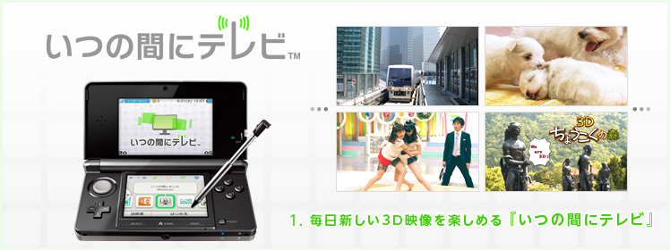
『いつの間にテレビ』は、ニンテンドー3DSの『ニンテンドーeショップ』から無料でダウンロードできる映像再生ソフトです。まずは、こちらのページを参考に、『ニンテンドーeショップ』から『いつの間にテレビ』をダウンロードしましょう。
起動すると、映像を自動的に受信します。
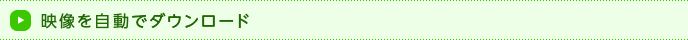
使い方は、とてもカンタンです。HOMEメニューのアイコンをタッチして起動すると、すぐに最新の3D映像が次々と再生されます。下画面の一時停止／再生ボタンとスライドバーをタッチすれば、再生を停止したり、一度見ている映像の好きな部分に移動したりすることができます。
また、下画面の左下にある「メニュー」をタッチすると、ほかに受信されている映像が一覧表示されます。
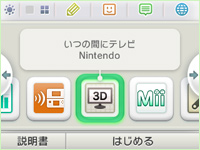
ニンテンドー3DS本体の電源が入っている状態で、インターネット接続ができる場所であれば、『いつの間にテレビ』を起動しなくても、ニンテンドー3DSのフタを閉じたスリープ状態のままで、「いつの間に通信」の機能で新しい3D映像が毎日、自動的にダウンロードされます。
新しい3D映像が配信されると、『いつの間にテレビ』のアイコンに青いマークが表示されます。映像は、本体のSDカードにダウンロードされます。ダウンロードされた映像は、インターネット環境がない場所でも再生して楽しむことができます。
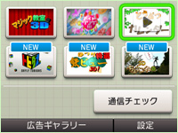
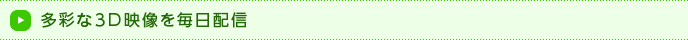
『いつの間にテレビ』では、日本テレビ・フジテレビ制作による3D映像が毎日配信されています。内容は、おなじみのテレビ番組のスペシャル版から、『いつの間にテレビ』オリジナルの映像まで、実に多彩。1本の長さは2分前後なので、ゲームの合間の休憩や外出の際の移動時間などにもピッタリです。
さまざまな動物たちの3D映像や雑学を日替わりで紹介しています。干支占いで今日の運勢をチェックすることもできます。絵本がわりに、お子さんと一緒に楽しむのもおすすめです。
（※）
9/1から9/5までの間は、『東北魂の祭 笑顔で泣く』が配信されます。
多彩なジャンルのマジックを3D映像で毎日紹介。ナポレオンズのおふたりが面白おかしくタネ明かしも披露してくれます。あなたもマジックを覚えて、友だちに自慢しちゃいましょう。
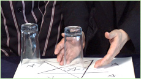
日本テレビ『ぶらり途中下車の旅』の路線映像コレクションです。列車の運転席からの風景を3Dで見ることができます。旅行好きのあなたも鉄道マニアのあなたも要チェックです。
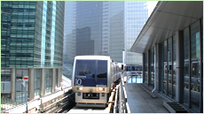
アイドルグループ「アイドリング!!!」が大相撲に挑戦。プライドをかけた真剣勝負を3D映像で配信しています。カワイイ力士たちの微妙な軍配の行方も、3Dでハッキリ見えちゃいます。
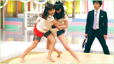
古今東西の流行語やキーワード、その日にまつわる歴史や雑学などをコントやフリートークでお届けする3D情報バラエティ映像です。毎日チェックすれば、ものしり博士になれるかも！？
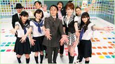
さまざまな彫刻作品を3D映像で配信しています。2D映像では不可能な、彫刻の持つ立体感をすみずみまで再現。新しい鑑賞スタイルを提供しています。
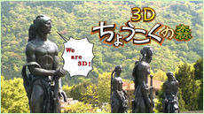
あの試合の決定的瞬間を3D映像で配信。試合会場でも普通のテレビでも味わえない3D映像ならではのスポーツの迫力を、たっぷりと味わうことができます。
『いつの間にテレビ』の3D映像は、毎日6本、新しい映像が配信されます。その日の配信分を見ないまま新しい映像を受信すると、前日の配信分を見ることはできません。特にお気に入りの映像は、お見逃しのないよう、ぜひ毎日チェックしてください。
次ページでは、『日刊トビダス』と『マジック教室3D』の収録現場の様子のレポートや、制作スタッフ・出演者のみなさんへのインタビューやコメントを掲載しています。これまでにない3D映像制作にまつわる裏話は必見です。
『ニンテンドーeショップ』では、『いつの間にテレビ』と同じように、任天堂のおすすめ映像を楽しめる『ニンテンドービデオ』も、無料でダウンロードすることができます。
こちらでも、『いつの間にテレビ』とは少し違った雰囲気の映像が楽しめます。
『ニンテンドービデオ』をダウンロードすると、「いつの間に通信」の機能を使って、おすすめ映像が自動的に受信されるようになります。『ニンテンドービデオ』の映像配信は不定期なので、アイコンに青いマークが表示されたら、すぐにタッチして確認してみてください。
『ニンテンドービデオ』をダウンロードすると、「いつの間に通信」の機能を使って、おすすめ映像が自動的に受信されるようになります。『ニンテンドービデオ』の映像配信は不定期なので、アイコンに青いマークが表示されたら、すぐにタッチして確認してみてください。
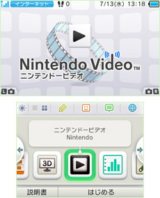